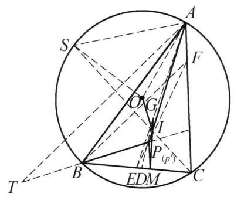

26 例 9：欧拉线与内心、重心、外心共线
26.1 题目
设 \triangle {ABC} 的外心，内心，重心分别为 O, I, G . 过点 B 作 {BP} \perp {OI} 交 {AI} 的延长线于点 P . 过点 P 作 {PM}//{AC} 交 {BC} 于点 M . 证明: I, G, M 三点共线.

图 3-8
26.2 参考解答
如图 3-8,设 {AI} 与 {BC} 交于点 D,{AG} 与 {BC} 交于点 E . 要证 I, G, M 三点共线，对 \triangle {ADE} 和直线 {IGM} ,由梅涅劳斯定理,只需证明:
\frac{AI}{ID} \cdot \frac{DM}{ME} \cdot \frac{EG}{GA} = 1.
①
由 I 为 \triangle {ABC} 的内心,知
\frac{AI}{ID} = \frac{AC}{CD}.
②
由 {PM}//{AC} ,得
\frac{AC}{CD} = \frac{PM}{MD}.
③
由 G 为 \triangle {ABC} 的重心,知
\frac{EG}{GA} = \frac{1}{2}.
④
由②，③，④知要证①成立，只需证明 {PM} = {2ME} . 设 {PE} 与 {AC} 交于点 F ，故只需证明 {FC} = {2CE} = {BC} .
下面用同一法. 作 {CF} = {BC} ，设 {FE} 交 {AD} 于 {P}^{\prime } . 下证明 B{P}^{\prime }\perp {OI} ，从而此点 {P}^{\prime } 即为题目中要求的 P .
连接 {CI} 并延长交 \triangle {ABC} 的外接圆于 S ，则 S 为弧 {AB} 的中点且 {SO} \perp {AB} . 由鸡爪定理，有 {SI} = {SA} ，且
\angle {SOA} = \frac{1}{2}\angle {BOA} = \angle {ACB},
于是 \triangle {AOS} \backsim \triangle {FCB} ,因此,
\frac{SO}{SI} = \frac{SO}{SA} = \frac{FC}{FB}.
⑤
作 {AT} \perp {CI} 交 {P}^{\prime }B 的延长线于 T ,则 {AT}//{FB} . 因为 {SO} \perp {AB},{SI} \perp {AT} , 所以 \angle {OSI} = \angle {BAT} . 延长 B{P}^{\prime } 交 {AC} 于点 X . 对 \triangle {XCB} 及直线 E{P}^{\prime }F ,由梅涅劳斯定理, 得
\frac{XF}{FC} \cdot \frac{CE}{EB} \cdot \frac{B{P}^{\prime }}{{P}^{\prime }X} = 1,
而 {CE} = {EB},\frac{B{P}^{\prime }}{{P}^{\prime }X} = \frac{BA}{AX} ,所以 \frac{XF}{FC} \cdot \frac{BA}{AX} = 1 .
又由 {AT}//{FB} ,得 \frac{XF}{AX} = \frac{FB}{AT} ,故 \frac{BA}{FC} \cdot \frac{FB}{AT} = 1 ,从而
\frac{FC}{FB} = \frac{BA}{AT}.
⑥
由⑤，⑥得 \frac{SO}{SI} = \frac{BA}{AT} ，于是结合 \angle {OSI} = \angle {BAT} ，得 \triangle {OSI} \backsim \triangle {BAT} . 所以 {OI} \perp \; B{P}^{\prime } . 即 {P}^{\prime } 与 P 重合.
原问题得证.
注:本题分两步证明:先用梅涅劳斯定理简化欲证结论，再用同一法证明 B{P}^{\prime } \perp {OI} ，要综合利用相似与梅涅劳斯定理，有一定的难度.
26.3 解题思路与分析
这个证明之所以让人觉得“费解”甚至有些“神来之笔”，是因为它隐去了作者在草稿纸上逆向探索的过程，并且把两个非常经典的高联几何标准构型（套路）无缝拼接在了一起。
如果我们顺着作者的呈现顺序看，会不断产生疑问：“为什么要连 PE 交 AC 于 F？”、“为什么突然去外接圆上找弧中点 S？”、“点 T 又是从哪里冒出来的？”。
下面我们站在解题者的视角，把这份解答背后真实的思维生成过程还原出来。
26.3.1 第一阶段：顺藤摸瓜，把“三点共线”转化为“定长问题”
拿到题目，要证 I, G, M 三点共线。 1. 选择工具：点 I 在角平分线 AD 上，点 G 在中线 AE 上，点 M 在底边 BC 上。这三条线恰好构成了 \triangle ADE，而 I, G, M 分别在 \triangle ADE 的三边（或其延长线）上。用梅涅劳斯定理（Menelaus’s Theorem）是完全本能的反应。 2. 代数化简：列出梅氏定理后，利用角平分线性质（\frac{AI}{ID} = \frac{AC}{CD}）和重心的性质（\frac{EG}{GA} = \frac{1}{2}），再结合题目给的平行条件 PM \parallel AC（提供了相似比 \frac{AC}{CD} = \frac{PM}{MD}），式子极其顺畅地约分，最后只剩下一个核心等价条件： PM = 2ME 3. 几何翻译（寻找点 F 的动机）： 看到 PM \parallel AC，同时又要求证明一个比例关系 \frac{PM}{ME} = 2。在初等几何中，遇到“平行线 + 线段比例”，最自然的操作就是构造A字型或8字型相似（中心位似）。 连接 PE 并延长交 AC 于点 F，由于 PM \parallel FC，立刻有 \triangle PME \sim \triangle FCE。 于是，怪异的内部线段关系 PM = 2ME，瞬间被投射到了大三角形的边上，变成了： FC = 2CE 而 E 是 BC 的中点（因为 G 是重心），2CE 就是 BC！所以，结论等价于 FC = BC。
26.3.2 第二阶段：为什么要用“同一法”？
走到这一步，我们的任务变成了： > 已知：BP \perp OI，P 在 AI 上。 > 求证：PE 与 AC 的交点 F 满足 FC = BC。
解题者在这里遇到了最大的思维阻力： 条件“BP \perp OI”是一个非常难直接使用的条件。外心 O 和内心 I 的连线（欧拉线方向的变体）在纯几何中几乎没有直接的成比例线段性质；而结论 FC = BC 却意味着 \triangle FCB 是一个顶角为 C 的等腰三角形！
- 如果正着推：从一条悬空的垂线 BP \perp OI 出发，去证 \triangle FCB 等腰，完全无从下手。
- 如果倒着推（同一法）：先假定 \triangle FCB 就是等腰三角形（令 CF = CB），那么点 F 就被锁死了，EF 与 AI 的交点 P' 也就被唯一确定了。接下来只需要去验证 BP' \perp OI。
这就是使用“同一法”的真实动机：“等腰三角形”包含的几何信息（对称、角度、边相等）远远比“一条不知所云的垂线”丰富得多，从信息量大的一端出发去推导信息量小的一端，难度会呈指数级下降。
26.3.3 第三阶段：如何破译“BP' \perp OI”？（最核心的机关）
现在问题变成了：已知 CF = CB，由 EF 交 AI 定出点 P'，怎么证 BP' \perp OI？
26.3.3.1 1. 怎么处理孤立的线段 OI？（引出点 S）
在竞赛几何中，只要题目里出现了连接外心 O 和内心 I 的线段 OI，并且要求处理与 OI 相关的角度或垂直问题，有一个几乎是唯一指定标准动作的辅助线——构造鸡爪定理（Incenter-Excenter Lemma）构型。 也就是连接某条角平分线交外接圆于弧中点 S。为什么？ 因为外心 O 掌管外接圆半径（OS），内心 I 掌管角平分线，而鸡爪定理给出了 SA = SB = SI。这样一来，原本毫无瓜葛的 O 和 I，就被放进了同一个极为规整的三角形 \triangle OSI 中！
至于选哪个角的平分线？因为我们的核心等腰三角形 \triangle FCB 顶角在 C，为了跟 \angle C 扯上关系，自然选择延长 CI 交外接圆于弧 AB 的中点 S。 连接之后，解题者马上发现了一个惊喜： - 在 \triangle FCB 中，CF = CB，这是顶角为 C 的等腰三角形。 - 在外接圆中，S 是弧 AB 中点，OS \perp AB，圆心角的一半 \angle SOA = \angle C，而鸡爪定理又保证了 SI = SA。 这说明，\triangle AOS 的形状加上 SI=SA 的条件，提供的核心比例 \frac{SO}{SI} = \frac{SO}{SA} 完全由 \angle C 决定，恰好等于等腰 \triangle FCB 中的 \frac{FC}{FB}！这就是证明中第⑤式的来历。
26.3.3.2 2. 怎么证明两条没有交点的线垂直？（引出“旋转相似”与点 T）
现在我们手头有了包含 OI 的 \triangle OSI，目标是证 BP' \perp OI。 在平面几何中，证明两条位置很拧巴的线段垂直（比如这里的 OI 和 BP'），最强大的武器是旋转 90^\circ 的相似三角形： > 如果能找到一个三角形 \triangle BAT（其中 B, P', T 共线），使得 \triangle BAT \sim \triangle OSI，并且它们的两条对应边互相垂直（即 OS \perp AB 且 SI \perp AT），那么第三条对应边就必然垂直（即 OI \perp BT）！
这就是点 T 诞生的真正过程——它是被“倒推设计”出来的！ 解题者在草稿纸上是这样想的： 1. 我已经有了 \triangle OSI。 2. 我想把 \triangle OSI 旋转 90^\circ 并放大，贴到线段 AB 上去，让 SO 对应 AB（因为已知 SO \perp AB，天然满足第一组边垂直！）。 3. 那么，SI 应该对应从 A 点出发的一条线段 AT。为了让它们也垂直（SI \perp AT），我必须过点 A 作 AT \perp CI（因为 S, I, C 共线，SI 就是 CI）！ 4. 同时，由于 \triangle FCB 是以 C 为顶角的等腰三角形，角平分线 CI 必然垂直于底边 BF（三线合一）。既然 AT \perp CI 且 BF \perp CI，那么 AT \parallel FB 就是顺带白送的性质！ 5. 让这条垂线 AT 与 BP' 的延长线交于点 T，我们要找的目标三角形 \triangle BAT 就搭好了。
26.3.4 第四阶段：最后的合龙（用梅氏定理算比例）
搭好了 \triangle BAT 和 \triangle OSI，由于两组对应边已经互相垂直（SO \perp AB，SI \perp AT），它们的夹角必然相等：\angle OSI = \angle BAT。 现在，距离证明 \triangle OSI \sim \triangle BAT 只差最后一步：证明夹这个角的两边成比例，即： \frac{SO}{SI} = \frac{BA}{AT}
既然前面第⑤式已经知道 \frac{SO}{SI} = \frac{FC}{FB}，那就只需证明： \frac{FC}{FB} = \frac{BA}{AT}
到了这一步，这纯粹是一个已知点位置、求线段比例的常规计算题了： - 图中有什么？有中点 E（来自重心），有角平分线 AI（来自内心），有平行线 AT \parallel FB。 - 延长 BP' 交 AC 于 X，在 \triangle XCB 中，直线 F-P'-E 是一条天然的截线，直接上梅涅劳斯定理，把中点 CE=EB 和角平分线性质 \frac{BP'}{P'X} = \frac{BA}{AX} 代进去，三下五除二就把比例倒腾出来了。
26.3.5 总结：整道题的思维脉络图
如果你把解答倒过来读，就会发现它其实非常自然，没有任何一步是“瞎蒙”的：
\begin{aligned} \text{欲证 } I,G,M \text{ 共线} &\xrightarrow{\triangle ADE \text{ 梅氏定理}} \text{等价于 } PM = 2ME \\ &\xrightarrow{\text{延长 } PE \text{ 构造八字相似}} \text{等价于 } FC = BC \text{（出现等腰 } \triangle FCB\text{）} \\ &\xrightarrow{\text{正面难算，改用同一法}} \text{固定 } FC=BC\text{，反证 } BP' \perp OI \\ &\xrightarrow{\text{处理 } OI \text{ 的标准套路}} \text{引出弧中点 } S\text{，将 } OI \text{ 放入 } \triangle OSI \\ &\xrightarrow{\text{证垂直的标准套路：旋转 } 90^\circ \text{ 相似}} \text{因为 } OS \perp AB\text{，故作 } AT \perp SI \text{ 构造 } \triangle BAT \\ &\xrightarrow{\text{验证相似比 } \frac{BA}{AT} = \frac{FC}{FB}} \text{利用平行线与 } \triangle XCB \text{ 的梅氏定理完成封顶} \end{aligned}
很多竞赛几何题的官方解答为了追求篇幅精简，习惯采用“演绎法”（直接扔出辅助线然后往下推），把最精华的“分析法”（为什么要做这条辅助线）给抹掉了。一旦看穿了“遇到 OI 找弧中点用鸡爪”和“证怪异垂直找 90^\circ 旋转相似”这两个标准模块，这个证明就不再是天书，而是一篇严丝合缝的八股文了。
26.4 分步证明
26.4.1 步骤 0：已知条件与图形构型
设 \triangle ABC 的外心为 O、内心为 I、重心为 G。 过点 B 作 BP \perp OI 交 AI 的延长线于点 P。 过点 P 作 PM \parallel AC 交 BC 于点 M。 求证目标：证明 I, G, M 三点共线。
26.4.2 步骤 1：梅涅劳斯定理：共线目标转化
连结 AI 交 BC 于点 D，AG 延长线交 BC 于中点 E。 在 \triangle ADE 中，待证三点 I, G, M 分别位于三边所在的直线上： • I 在边 AD 上，内分比为 \frac{AI}{ID}； • G 在边 AE 上，内分比为 \frac{EG}{GA}； • M 在边 DE 延长线上，外分比为 \frac{DM}{ME}。 由梅涅劳斯定理，要证 I, G, M 共线，充要条件是： \frac{AI}{ID} \cdot \frac{DM}{ME} \cdot \frac{EG}{GA} = 1 ①
26.4.3 步骤 2：代数化简：目标归结为 FC = BC
由角平分线性质知 \frac{AI}{ID} = \frac{AC}{CD} ②； 由平行线 PM \parallel AC 得 \frac{AC}{CD} = \frac{PM}{MD} ③； 由重心性质知 \frac{EG}{GA} = \frac{1}{2} ④。 将②、③、④代入①式化简，只需证明：PM = 2ME。 延长 PE 交 AC 延长线于点 F。由于 PM \parallel FC，由相似三角形 \triangle PME \sim \triangle FCE 得 \frac{PM}{FC} = \frac{ME}{CE}，故只需证明： FC = 2CE = BC
26.4.4 步骤 3：同一法构造：辅助点 P’ 与外接圆中点 S
采用同一法证明：在射线 CA 上截取点 F，使得 CF = BC。 设 FE 交角平分线 AD 于点 P'。若能证明 BP' \perp OI，由垂线交点的唯一性，即得 P' = P！ 作外接圆 \odot O。连结 CI 并延长交外接圆于点 S。 因 CI 平分 \angle C，S 为弧 AB 中点，故 SO \perp AB。 由鸡爪定理（圆幂内心性质），弧中点到内心及两顶点等距： SI = SA = SB
26.4.5 步骤 4：等腰相似：导出 SO/SI = FC/FB
在等腰 \triangle AOS 中，OA = OS = R，其顶角所对弧为弧 AS = \frac{1}{2}\text{弧}AB： \angle SOA = \frac{1}{2}\angle BOA = \angle ACB 在等腰 \triangle FCB 中，作法已知 CF = CB，顶角 \angle FCB = \angle ACB。 两等腰三角形顶角相等，故两三角形相似：\triangle AOS \sim \triangle FCB。 由对应边成比例：\frac{SO}{SA} = \frac{FC}{FB}，以 SA = SI 替换底边得： \frac{SO}{SI} = \frac{FC}{FB} ⑤
26.4.6 步骤 5：平行线 AT 与梅氏定理：导出 FC/FB = BA/AT
作 AT \perp CI 交 P'B 延长线于 T。 因等腰 \triangle FCB 顶角平分线 CI \perp FB，故 AT \parallel FB，且易得 \angle OSI = \angle BAT。 延长 BP' 交直线 AC 于点 X。对 \triangle XCB 及截线 F-P'-E 应用梅涅劳斯定理： \frac{XF}{FC} \cdot \frac{CE}{EB} \cdot \frac{BP'}{P'X} = 1 由 CE = EB 及角平分线性质 \frac{BP'}{P'X} = \frac{BA}{AX}，结合平行线 \frac{XF}{AX} = \frac{FB}{AT}，整理得： \frac{FC}{FB} = \frac{BA}{AT} ⑥
26.4.7 步骤 6：相似判定与垂直归宿：证明完成
综合⑤、⑥两式得：\frac{SO}{SI} = \frac{BA}{AT}。 结合夹角相等 \angle OSI = \angle BAT，两边成比例且夹角相等： \triangle OSI \sim \triangle BAT 由两三角形对应边位置垂直关系：SO \perp BA, SI \perp AT，则第三边必互相垂直： OI \perp BT \implies BP' \perp OI 从而辅助点 P' 与题目中的点 P 必然重合！ 由此 PM = 2ME 成立，逆推回①式，I, G, M 严格三点共线，命题得证！